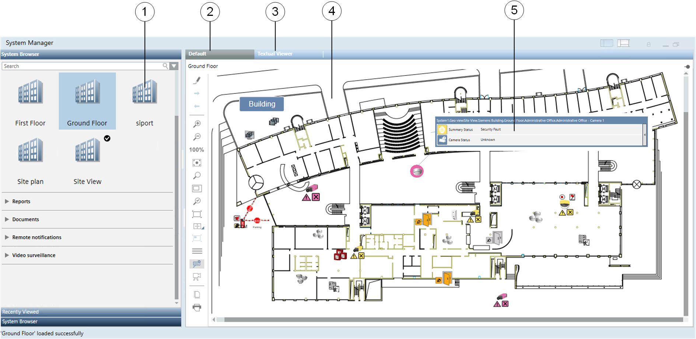
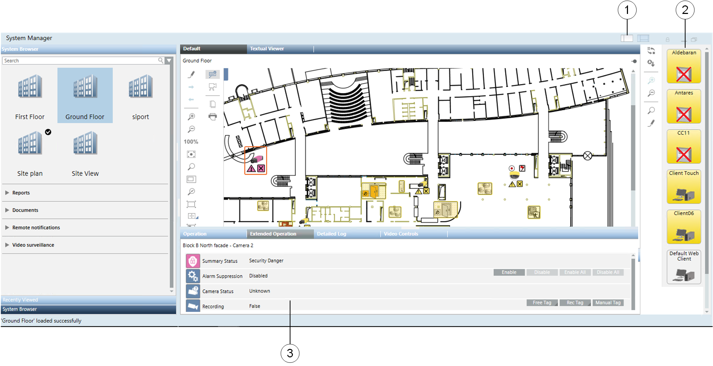
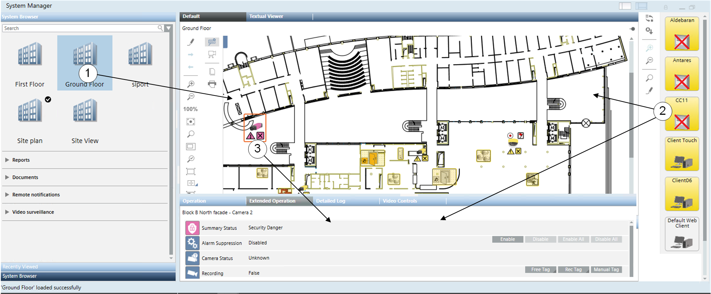

System Manager
Overview
System Manager is a multi-pane window for navigating, monitoring, and controlling all the components and subsystems of your site. For example, you can inspect properties and states of objects, consult floor plan graphics, send commands, and so on. In the Lite DMS User Interface, two System Manager layouts are available, a primary and an advanced layout, and you can easily switch between the two.
NOTE: The exact interface will vary depending on your particular configuration, and you may not see all the components described. In particular, the Graphics display and its operation are dependent on the selected object.
Primary Layout
The Primary Layout is the default look and feel shown when the user logs in the system.

| Name | Description |
1 | Application Selection | It lists the applications configured in the system and groups them in categories. Depending on the application, Graphics pages, Documents or Reports display here, and can be selected and then operated from the work area. Upon starting up, the system presents the latest application selected, or you can set a preferred default application by holding the mouse pointer over it for more than 2 seconds. The checkmark indicates the default application. |
2 | Default View | The Default tab provides the standard display of the selected object. |
3 | Textual Viewer | The Textual Viewer provides a quick summary of the current value and status of any selected objects without any prior system configuration. |
4 | Work area | Displays the selected application for further operation. |
5 | Object status indication | The Status and Commands window displays next to the object in graphics, when the user right-clicks on it. Events can be acknowledged and/or reset here. |
Advanced Layout
The advanced interface provides additional display and control elements: the Site Viewer pane, on the right-hand side of the screen, with dynamic symbols representing control panels and system components, and the Contextual pane, below the work area, which contains detailed properties and commands of the selected objects.

| Name | Description |
1 | Layout selection | The layout icons allow switching between primary and advanced interface. |
2 | Site Viewer | The Site Viewer enables you to monitor and control the installed control panels, which display as graphic symbols that show the category color of the most important event, and blink when an event acknowledgement is required. For more information, see Site Viewer. |
3 | Contextual pane | Detailed properties and control commands are available in the Status and Commands window. |
Workflows
You can select an application from both the Selection pane, on the left-hand side of screen, and from the Site Viewer pane, on the right-hand side. In the Selection pane, open the expanders in System Browser and click an application icon to select it and propagate its information to the working area. The past selections are collected in the Recently Viewed tab for quick access.
In the Site Viewer, double-click a control panel or a system component to perform the same selection. In the work area, or in the Site Viewer, click an object to populate the Contextual pane with its properties and control commands.

| Name | Description |
1 | Application Selection | Open the System Browser expanders and click the icon to propagate the object information in the work area. The past selections can be found again quickly in the Recently Viewed tab. |
2 | Site Viewer | Click the symbol to populate the Contextual pane with properties and commands of the selected panel. |
3 | Contextual pane | Click any object in the work area to display properties and control commands in the Status and Commands window. |